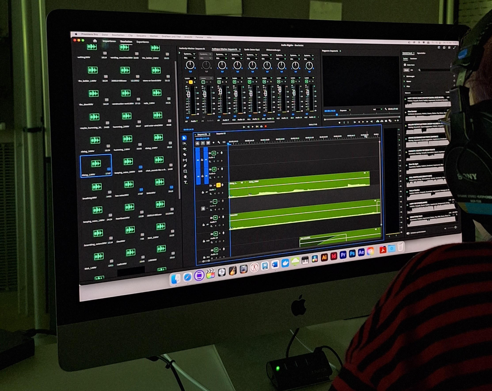

V
Also die Sache ist, man muss ja immer bedenken, dass das alles Wissen ist, was so der Mensch in die KI gefüttert hat. Und KI lernt ja auch immer noch weiter hinzu. Es ist so scary zu beantworten, weil ich meine, es gibt ja jetzt auch so Roboter, die dann irgendwie so Olympiaden laufen oder so. Es ist immer so was genau betitelt wird, zum Beispiel sportliche Aktivitäten. Solche Aktivitäten sind halt darauf eingeschränkt, wie viel die Entwickler*Innen der KI als Option zu tun geben. Und bei den anderen zum Beispiel jetzt ChatGPT etc. Da könnte ich mir vorstellen, dass es vielleicht auch irgendwann selber sich so ein Eigentum für sich entwickelt. Ich will da gar nicht so sagen, das hat so gewisse Grenzen, weil ich glaube, es lernt dazu. Deswegen glaube ich, gibt es da nicht aktiv einen Punkt. Ich glaube, die Menschheit ist dahingehend zu geizig und deswegen gibt es eigentlich immer mehr. Ich glaube, das hat keine Grenzen und das wird sich einfach nur weiterentwickeln. Es könnte interessant sein, was so menschliche Emotionen angeht, weil gerade guckt es ja einfach nur so "Okay, wie ist die Person mit der ich spreche?” und meistens küsst es dir immer den Arsch. Das es halt so menschliche Emotionen versteht und von dem Skript abgehen kann. Ich glaube, das wäre spannend. Ich würde nicht sagen, dass es nie passiert, weil ich bin ein großer Fan von Detroid Become Human. Deswegen ist es da zum Beispiel auch, dass dann KI so ein Eigentum oder so ein eigenes Selbst entwickelt. Deswegen will ich das gar nicht abstreiten, dass das passieren kann. Ich glaube, das ist limitless. Das ist scary.
Klaus Neuburg
Ich glaube vor allem noch Bereiche, wo
Menschen mit Menschen arbeiten. Also zum Beispiel
Lehrer*Innen im Beruf, auch wenn es da zum Beispiel
Lernsoftware gibt, die natürlich vieles übernehmen können.

Da wo
Empathie eine Rolle spielt im
Pflegebereich zum Beispiel. Im Pflegebereich wird es
lange wichtig bleiben, dort wo
menschliche Qualitäten gefragt sind.
B12
Fiona Gebhardt: CI. Ich würde sagen, alles wo man eine genaue Vorstellung davon hat, was man eigentlich haben möchte oder vor allem auch, was man braucht. Das ist die Hürde von KI, zumindest von Generativer KI. Wenn wir jetzt davon sprechen, wir können nicht sagen: “Hey, ich möchte gerne genau in B12 CI diese Präsentation zu diesem Thema haben:” Ich kann eine Präsentation zu dem Thema haben, die sieht aber aus wie von Powerpoint 1997. Die Bilder sind dann nicht gut und der Text ist halt absolut generisch und kann uns noch nicht viel bringen.
Peter Werner: Je nachdem, wo der Anspruch ist. Also unsere Kunden haben einen extrem hohen Anspruch, das schützt uns und wir nutzen KI, um den Anspruch noch besser und schneller und genauer gerecht zu werden. Es geht aber immer noch durch kreative Hände. Hat man aber einen Kunden, der kaum Anspruch hat, der kein CI hat, dem es eigentlich egal ist, ist KI wunderbar für den Kunden und zerstört kreative Jobs.
Fiona Gebhardt: Weil die Qualität nicht unbedingt da sein muss, sondern man gibt sich mit weniger zufrieden und das kann KI auf jeden Fall.
Peter Werner: Als Beispiel, weil es um die Felder geht, die wir zum Beispiel intern in der Agentur nicht haben. Wir haben keine Productioner; das heißt wir nehmen keine Kamera und filmen nichts, wir haben kein Fotografen und wir fotografieren nichts für uns. Intern ja, aber für den Kunden nicht. Was wir eher glauben, ist, dass durch generative KI, die wir zu beherrschen versuchen, was nicht so einfach ist, um das wirklich exaktes Ergebnis zu erlangen. Ich bin fest davon überzeugt, dass wir als Agentur diese ganzen Aufgaben von Produktionsfirmen, Foto und Video selbst übernehmen können. Das heißt, wir machen zurzeit Konzept, Design, Regie, fahren mit und jemand filmt es oder jemand macht Fotos, Externer. Das werden wir mit KI früher oder später selber machen können. Das heißt, wir als Agentur profitieren fast von der KI, weil wir noch mehr Leistung erbringen können, auch wenn die Qualität stimmt. Im Moment stimmt sie noch nicht, aber irgendwann wird es so weit sein, dass wir exakt das sagen können, was prompten können, was dahin rauskommt in den nächsten Jahren. Und dann werden wir eher noch mehr zu tun haben als weniger. Und das ist etwas, was mit KI genauso passiert.
Albert Radl
Das ist ein sehr landläufiger Glaube, dass KI keine Grenzen hat. Natürlich hat es das nicht, aber es ist ja alles an Bedingungen gebunden. Ich habe den Versuch selber gestartet, in einem Job, der dezidiert, der sollte nach KI aussehen. Ein umfangreicher Job, da sollte ich ein großes Panel gestalten, das aussehen sollte wie KI. Und das habe ich auch, aber dann mach ich's auch in KI. Aber ich würde es ganz gerne mal sehen, was denn dabei rauskommt. Wie lange brauche ich denn da wirklich für? Und da hat sich dann für mich gezeigt, ja, ich bin schnell bei einem Ergebnis, aber für die letzten 5% muss ich so viel Zeit in das Prompten, in das Customizing, in das Verbessern stecken. Das ich das auch gleich analog hätte machen können. Unabhängig davon, von welcher Richtung ich komme, wenn ich ein markfinales Bild im Kopf habe, ich möchte genau dieses Bild herstellen, dann hilft mir die KI sehr lange, aber auf den letzten Metern hilft es mir dann nicht mehr, weil ich dann doch wieder das so umbauen muss, bis es für mich passt. Wenn ich das Bild nicht vor Augen habe, dann trägt mich die KI komplett ins Ziel. Und meine Angst ist ein bisschen, dass die Leute, die den zweiten Weg gehen, die eben dieses Bild nicht vor Augen haben, dass die die ganzen Jobs dann machen. Das kostet dann auch nichts. Aber da sind die Grenzen der KI und ich finde das ganz wichtig, auch Kunden ins Bewusstsein zu rufen, dass es diese Grenzen durchaus gibt, dass man daran noch feilen kann und das ist dann eben nicht mehr so einfach ist. Wer hat das schon mal probiert? Den Film dann auch mal so umzusetzen, nur mit der KI und dann auch keine Kompromisse einzugehen, weil ich war früher auch nie bereit, Kompromisse einzugehen. Warum soll ich das dann jetzt tun, wenn mich die KI da bis nach 90-95 % trägt, dann ist das ein Kompromiss und ich war früher damit nicht zufrieden. Warum sollte das jetzt sein? Und dann muss ich die Zeit investieren, das Ding auch so zu finalisieren, dass mich am Ende des Tages die gleiche Zeit kostet. Die entscheidende Frage wird aber sein:”Wie steht eine Öffentlichkeit dazu?" "Wie ist das akzeptiert?” Das ich das so sehe, ist jetzt nicht weiter verwunderlich, dass ich auch die Vorteile im Analogen, im Authentischen, im originären Arbeiten, auch in originellen Arbeiten sehe, ist nicht verwunderlich. Aber es wird wahrscheinlich daran scheitern, dass das nicht alle so sehen. Es ist ja auch irgendwo Portemonnaie diktiert unsere Welt und ob sich das dann durchsetzt in dem Bewusstsein von Agenturen und Filmproduktionen, das steht auf einem ganz anderen Blatt. Und da bin ich eher pessimistisch. Ich sehe diese ganzen Vorteile am klassischen Arbeiten. Ich sehe natürlich auch das Preisschild, und ich bin ein bisschen skeptisch, wer alles bereit ist, diesen Preis mitzugehen, trotz aller Vorteile.
Fabio Kolligs
Ja, also KI ist immer dann überfordert, wenn sie irgendwie Kontext anwenden muss und Entscheidungen in einer Art und Weise treffen muss, für die man Lebenserfahrung braucht. Weil KI kann nur statistische Zusammenhänge, also zumindest die Large Language Model über die jetzt meistens geredet wird, wenn von KI gesprochen wird, die lernen nur die statistischen Zusammenhänge zwischen verschiedenen Wörtern, die irgendwie im Internet rumfliegen oder in anderen Trainingsmaterialien rumfliegen und sobald dann da irgendein Kontext zukommt, der nicht in diesen Trainingsdaten drin ist, dann fällt es KI extrem schwer, da eine vernünftige Antwort zu geben, die jetzt ein Mensch geben würde, der halt neue Informationen schnell in seinen Gedanken Prozess aufnehmen kann und verarbeiten kann. Da fällt KI noch kurz und KI fällt auch da kurz, wo es darum geht, irgendwie nachzuprüfen und durchzudenken, weil KI noch kein wirklich logisches Verständnis von der Welt hat. Und die KI hat auch nicht wirklich ein Verantwortungsbewusstsein was Fehlinformationen oder sowas angeht.